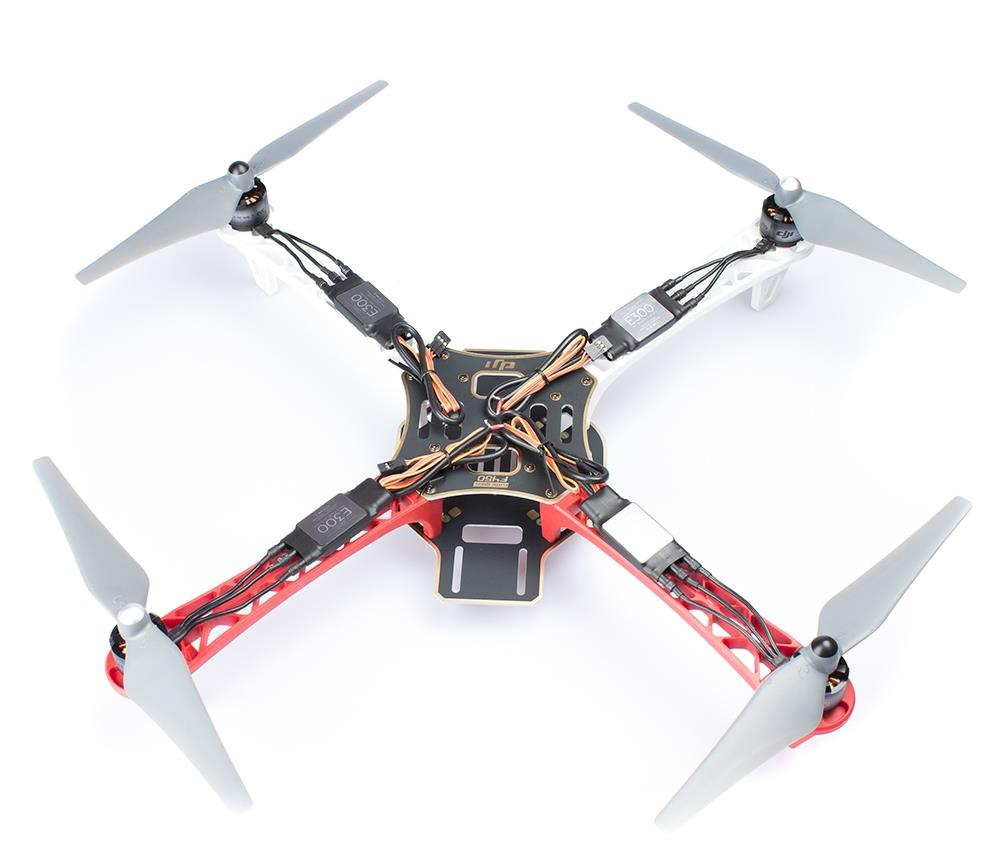
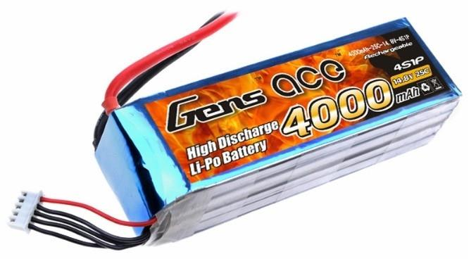

Hva er et multikopter?
Et multikopter er et radiostyrt fartøy med 3 eller flere rotorer.
Det vil si at den bruker 3 eller flere el-motorer med propeller for å holde seg i luften.

Hva består et multikopter av?
- Kropp
- Et multikopter består selvfølgelig først og fremst av en kropp. Denne kroppen kommer i forskjellige størreleser og fasonger, men det er alltid den alle komponentene festes til. Den består som regel av to plater med tre eller flere "armer".
- Motor
- Motorene er små elektriske motorer som skal rotere propellene.
- ESC
- ESCene er regulatorer som varierer spenningen som leveres til motoren, basert på et signal fra kontrollbrettet, for å kunne regulere hvor fort motoren spinner.
- Propell
- Propellen dytter luft når den roteres. Dette brukes til å løfte fartøyet opp i luften. Til hurtigere den spinner, til større kraft dytter den.
- Radiomottaker
- Radiomottakeren tar i mot signalene fra fjernkontrollen og sender de videre til kontrollbrettet.
- Kontrollbrett
- Kontrollbrettet er hovedenheten til fartøyet. Den tar i mot signalet fra mottaker og regulerer hastigheten til hver enkelt motor for å gi ønsket reaksjon. Kontrollbrett kan ha en rekke tilleggsfunksjoner som GPS og telemetri. Det vil si at man har mulighet til posisjonering vha GPS: dersom man slipper alle stikker på kontrollen vil fartøyet stoppe og holde posisjon.
- Batteri
- Strømforsyning 